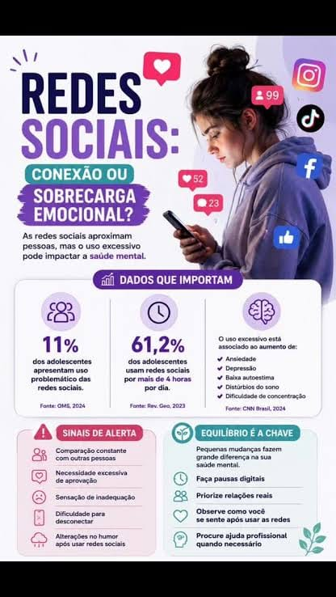
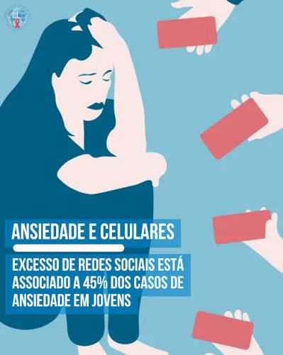
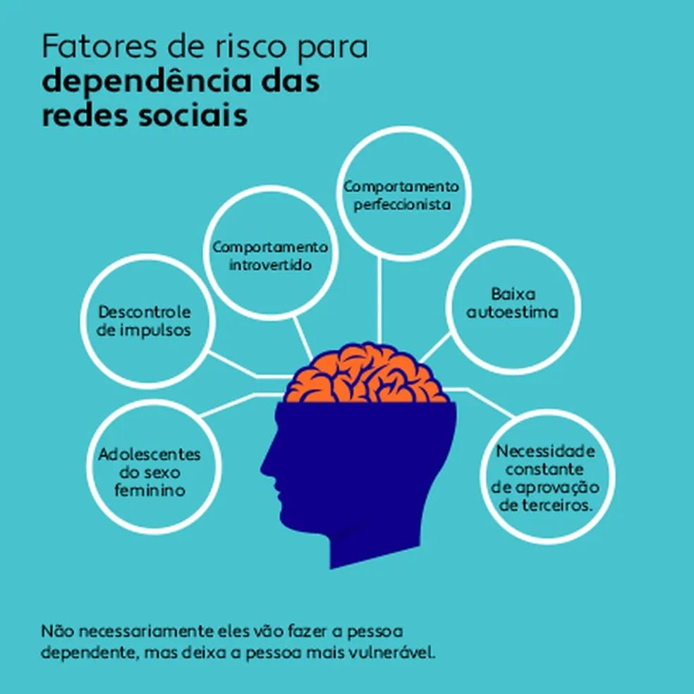

Galeria
Imagens gratuitas relacionadas ao uso de redes sociais e seus efeitos no
dia a dia. Baixe cada foto do Unsplash ou Pexels usando o termo de busca
indicado e salve em imagens/galeria/ com o nome de arquivo
correspondente.





Vídeo
Vídeo original disponível no YouTube. Créditos: [Drauzio Varella / O que é e como evitar o brain rot (apodrecimento cerebral)?].
Áudio
Descrição: Este áudio apresenta orientações sobre o uso saudável das redes sociais, destacando a importância do equilíbrio no tempo de uso, da proteção da privacidade, da verificação das informações antes de compartilhá-las e da valorização de atividades fora das telas para promover o bem-estar e a qualidade de vida.